Charades · Animals · page 4/13 · all packs
Reject an image by adding its slug to public/charades/charades-animals/reject.txt (append ! to keep it word-only), then re-run node scripts/genimages.mjs.
1 2 3 4 5 6 7 8 9 10 11 12 13 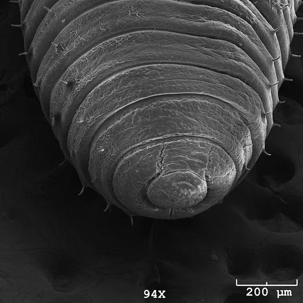
Earthworm earthwormCC BY 4.0 · Hannah G Watson, Andrew T Ashchi, Glen S Marrs, Cecil J Saunders · source 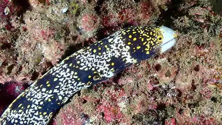
Echidna echidnaCC0 · Chris Spain · source 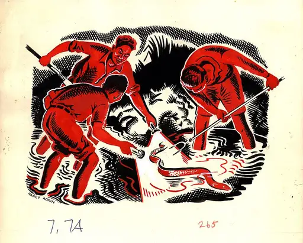
Eel eelCC BY 2.0 · Nancy Adkin / Archives New Zealand · source 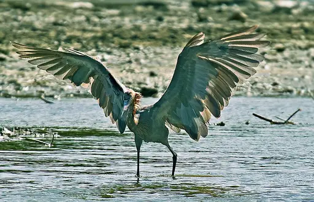
Egret egretCC BY-SA 4.0 · Atsme · source 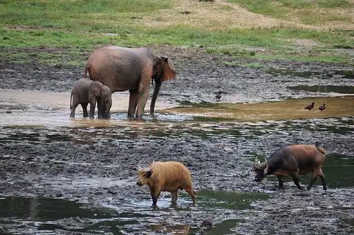
Elephant elephantCC BY-SA 4.0 · JosepMGracia · source 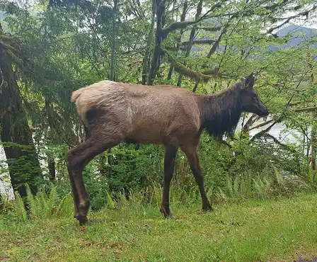
Elk elkCC BY-SA 4.0 · DeVos Max · source 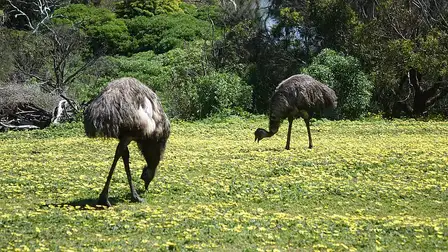
Emu emuCC BY-SA 4.0 · Neb · source 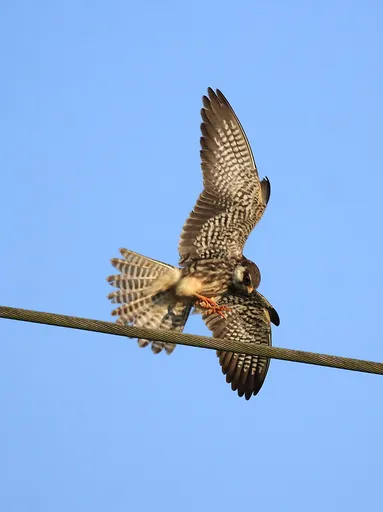
Falcon falconCC BY-SA 4.0 · Afsarnayakkan · source 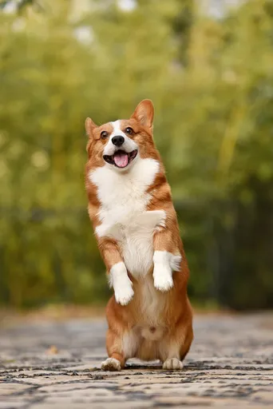
Fawn fawnCC0 · Huoadg5888Minor edits made by Subsidiary account · source 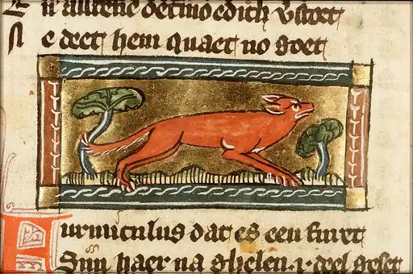
Ferret ferretPublic domain · Jacob van Maerlant · source Finch finchPublic domain · Troshran · source 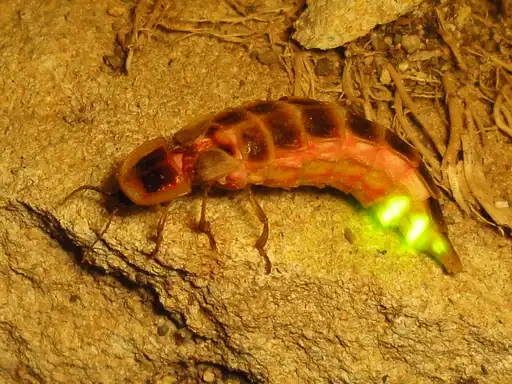
Firefly fireflyCC BY-SA 3.0 · Nevit Dilmen (talk) · source 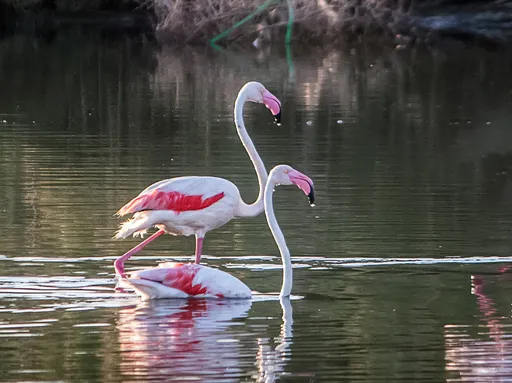
Flamingo flamingoCC0 · Smailtn · source 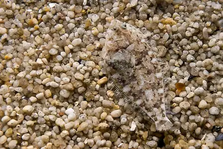
Flounder flounderCC BY-SA 2.5 · Moondigger · source 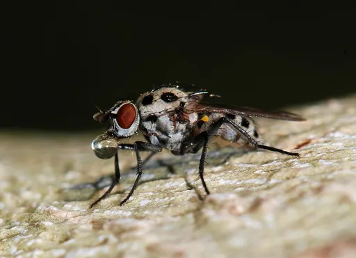
Fly flyCC BY-SA 3.0 · Alvesgaspar · source 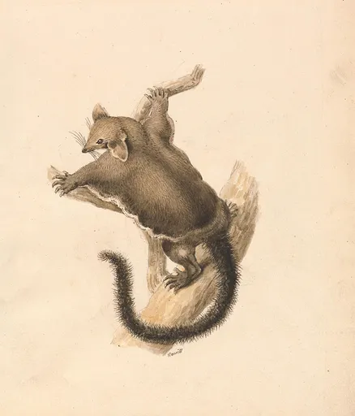
Flying squirrel flying-squirrelCC0 · Samuel Howitt · source 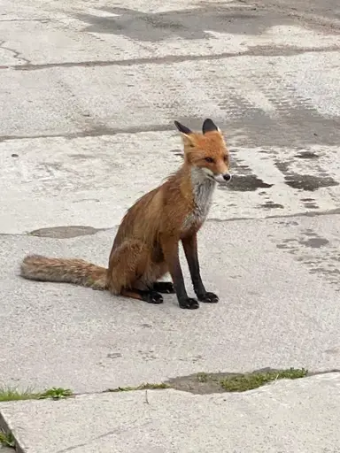
Fox foxCC0 · Kalen Delon · source 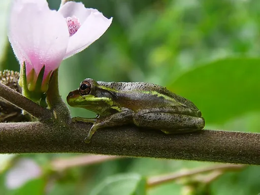
Frog frogCC BY-SA 3.0 · Cary Bass · source 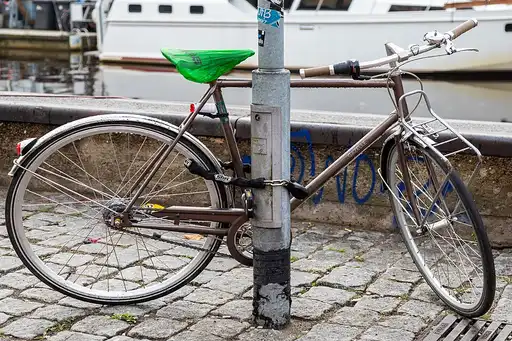
Gazelle gazelleCC BY-SA 4.0 · JoachimKohler-HB · source 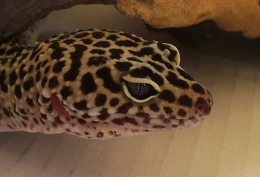
Gecko geckoCC BY 2.0 · Beckie · source 1 2 3 4 5 6 7 8 9 10 11 12 13